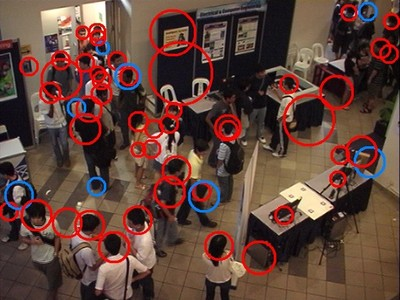
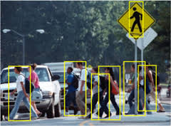
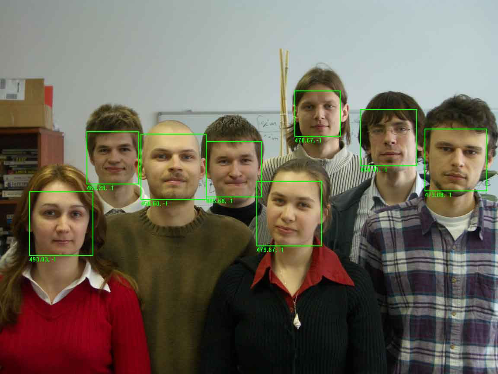
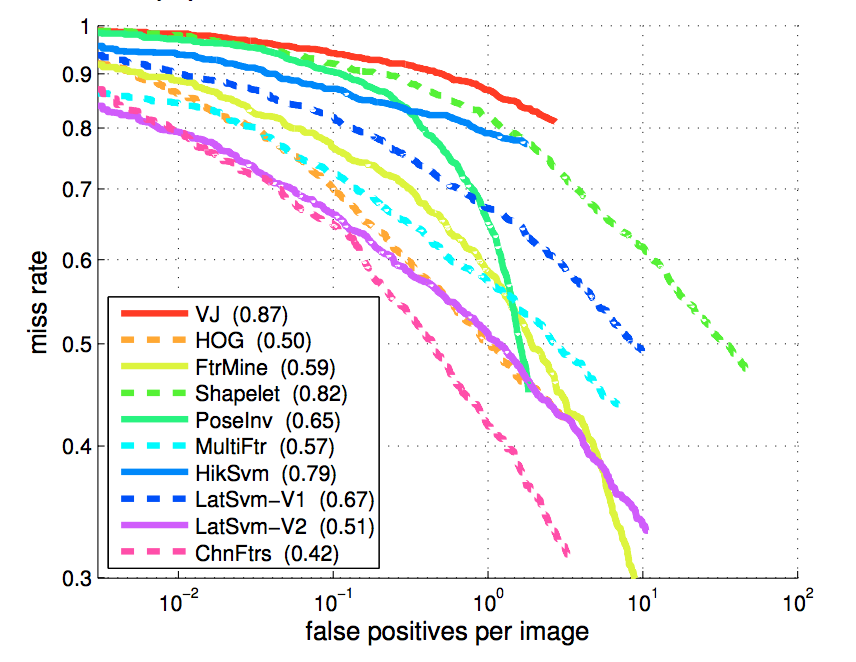
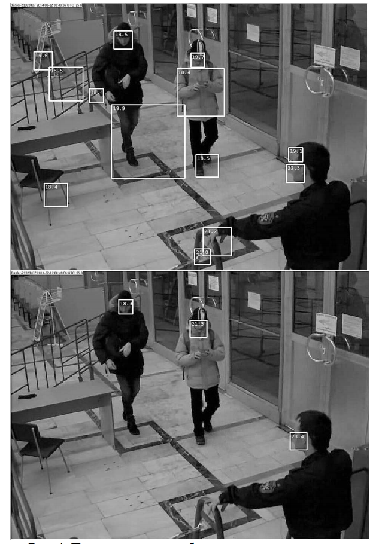

Алгоритмы определения и отслеживания человека в видеопотоке
и обработке изображений
Алгоритмы определения и отслеживания человека в видеопотоке
Лошкарёв И.В. loshkarev.i@gmail.com
SFEDU 2017
Типичные задачи
- Присутствие, Количество
- Отслеживание
- Отслеживание с распознаванием

Детекторы в общем
Features:
- HoG
- Wavelets
- PoI
- Plain
Learning:
- SVM
- Boost
- ConvNet
Присутствие человека в кадре
Признаки:

Голова

Силуэт

Лицо
Распознавание силуэта
 Piotr Dollár, Zhuowen Tu, Pietro Perona, Serge Belongie - Integral Channel FeaturesОбработка видео
Плюсы:
- Изотропность постранства
- Отсечение фоновых объектов
- Объём данных для обучения
Минусы:
- Ограничения по времени
- Объём данных для анализа
- Качество картинки
Распознавание лица на видеопоследовательности
Виола-Джонс превращается...
- Дообоучение на фоновых срабатываниях
- Сравнение с предыдущим результатом

Оценка количества людей с помощью детектора головы
Проблемы:
- Размер головы
- Ложные срабатывания
- Колебание результатов
Решения:
- Использование вектора перспективы
- Отсечение фоновых пикселей
- Медианная фильтрация результатов